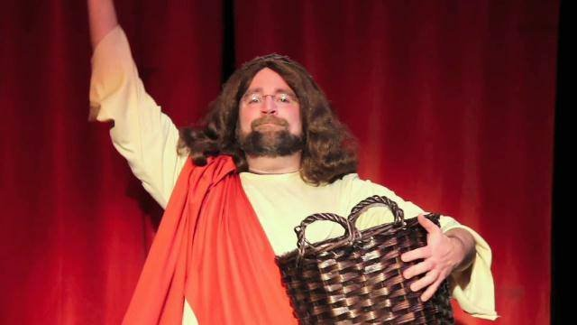

|
|
||
| Established 2014 | "All The News That's The Shit" | Number 69 |
Michael Lupinacci

He's not Olivier but he is an engaging, charismatic, larger than life personality who could do what I needed him to do. We've known each other for 20 years and I can describe him as both an adventurer and a philosopher (Fancy word for "Opinionated Wop" -in fact anyone within 50 paces of an Italian/American should be warned of the following credo "Everybody's entitled to my opinion!")
The single best descriptive adjective however is "Perpetual". The dude is always in perpetual motion, rarely sleeps and usually channels that energy on his Harley Road King Cruiser, taking off at a moments notice for parts unknown seeking.. something.. but doing it and not being passive in life.
Lup and I were former roommates. His rough exterior gives ways to a facile mind. We spent many late nights exchanging creative ideas back in forth like lightning rods. He previously helped organized an established Halloween haunted house in the area and would be drafted to play various ogres, goons or vexed military personnel warning of Zombie attacks so he has shown that he loves to ham it up!
He came on the talk show set with boundless enthusiasm-even suggesting some bits and reshaping some dialogue. The idea of coming on Mac's set throwing loaves and fishes to the audience was his and it worked. It was funny! In fact we took him out of his comfort zone and he delivered a definitive performance showcasing the range of emotion that I needed him to give!...and his Jesus is waaaaay less whiney than that pussy Jim Caviezel.